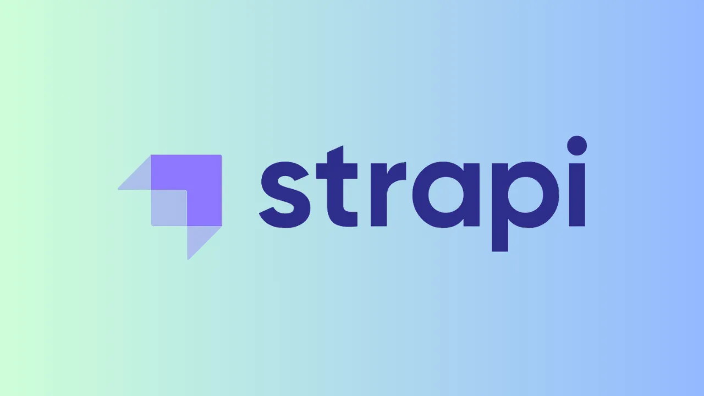

Getting Started with Strapi: A Beginner’s Guide
Strapi is a versatile and developer-friendly headless CMS that empowers you to create,
manage, and deliver content with ease. If you’re new to Strapi and eager to get started,
this guide is for you.
Follow the Strapi article series here
Implementation of Two-Factor Authentication with TOTP using Speakeasy
Two-factor authentication which is called two-step verification or dual-factor
authentication is a security process to better protect users and resources by asking
users to verify identity in two ways.
Testing in React: A Guide to Testing React Components and Applications
Testing is a fundamental aspect of building robust and reliable applications in React. In
this guide, I'll explain testing React components and applications using popular
testing tools like Jest and React Testing Library.
Integration of Huawei Account Kit
(In Kritify Application)
HMS core (Huawei Mobile Services) opens a wide range of services to application
developers. It offers basic services such as logging in with Huawei ID, payment services
and push notifications. In addition, HMS core provides various advanced features, such
as, positioning, map, machine learning, and games that provide a better experience to
Huawei users.